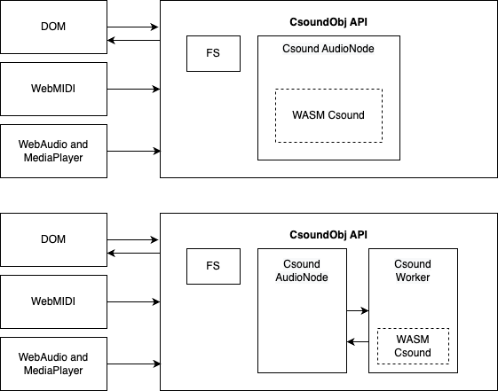

Csound on the Web
Welcome to Csound on the Web! In this tutorial we will learn the essentials of using Csound in a browser-based application. This will enable you take your Csound work across platforms to reach a large audience and work across devices. Along the way, we will cover some best practices for modularizing your work so that you can reuse as much as you can for your browser and non-browser work. Enjoy!
About WebAudio Csound
WebAudio Csound is a JavaScript and TypeScript library for using Csound in browser-based applications. It provides various backend architecture designs that implement the CsoundObj API. The CsoundObj API allows users to work primarily with Csound first without requiring deep knowledge of WebAudio, Workers, and WebAssembly, yet still offer the ability to access lower-level features for more advanced use cases.

CsoundObj Backend Architectures
Getting Started
Before we get going on tutorials, be sure to have the following installed.
What you'll need
- Node.js version 16.14 or above:
- When installing Node.js, you are recommended to check all checkboxes related to dependencies.
- The installation should include NPM (the Node Package Management tool) for managing projects and dependencies.
- Visual Studio Code:
- You're welcome to use whatever text editor you'd like, but we'll be using this one for these tutorials.
- Install the Csound extension through the Extension Manager. It provides syntax highlighting and live coding capabilities which can help make working with Csound code a little bit easier.
We will also be installing additional libraries and tools as we go through the tutorials.
Useful Links
- WebAudio Csound Documentation - Documentation for the WebAudio Csound API. The latest documentation for each version is always published with each release to NPM.
WebAudio Csound Projects
Project that you might look at for inspiration:
Csound Web-IDE - The online Csound Web IDE. (Github Project).
csound-live-code - Online live coding environment using Steven Yi's csound-live-code system. (Github Project)
webaudio-csound-samples-example - Example using FS and Csound project that loads audio samples. (Github Project)
gamepad-csound-web - Example using Gamepad API and Webaudio Csound. (Github Project)
learn-synthesis - Learning site for various synthesis methods. (Github Project)